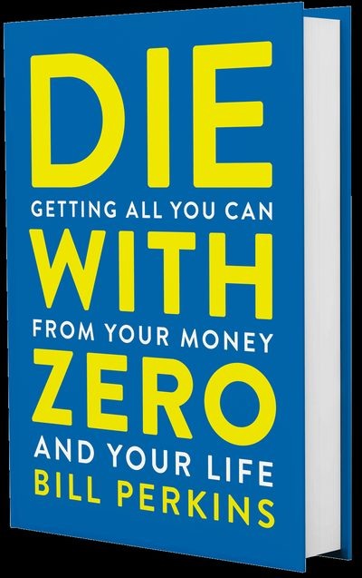

Library › Money & Finance
Die With Zero — Summary & Key Lessons

Getting all you can from your money and your life — the case against dying rich and living poor.
📖 OPEN THE FULL INTERACTIVE BREAKDOWN →🌐 Read it in Hindi, Hinglish, Gujarati, Tamil & 22 more languages — free, with audio.
💡 The Big Idea
Most personal finance optimizes for the wrong endpoint: maximum money at death. Perkins — energy trader and poker player — argues the real game is maximum LIFE: money is stored life energy, and every rupee unspent at death is hours of your life you traded and never redeemed. His tools: the MEMORY DIVIDEND (experiences pay twice — once when lived, then forever in recall and retelling; buy them EARLY and they compound like investments), TIME BUCKETS (list what you want to do before dying, then assign each to a decade — because the trek needs knees, the sabbatical needs energy, and 'someday' is a decade with no calendar), the DIE-WITH-ZERO calculation (know your number: survival till death costs less than you fear; everything above it is life you're not living), GIVE WHILE ALIVE (inheritance at your death arrives when your kids are ~60 — past their point of maximum need; give at their 25-35 when it changes trajectories; same for charity), and the SEASONS rule: some experiences EXPIRE — the kids stop wanting the beach trip, the body stops handling the mountain — so 'later' is often 'never' wearing a responsible costume.
🧠 The 6 Key Lessons
Lesson 1: The Memory Dividend: Experiences Pay Compound Interest
Chapters 1-2: Invest in Experiences
An experience isn't consumed once — it pays a MEMORY DIVIDEND: every recall, every retelling, every friendship it deepened keeps paying for decades. That flips the spend-vs-save math for the young: the ₹50,000 trip at 25 yields 60 years of dividends and shapes who you become; the same trip at 70 yields a fraction — if your body allows it at all. Perkins isn't preaching recklessness (he's explicit: fund your survival first); he's attacking AUTO-PILOT DELAYED GRATIFICATION — the habit of deferring life itself, long past the point where deferral buys anything. The brutal curve: health declines with age faster than wealth compensates, so lifetime fulfillment is maximized by spending MORE in high-health decades and less in low-health ones — the exact opposite of the standard save-forever-then-splurge-at-75 plan, by which time the splurging body has a bedtime and a diet chart.
📖 Example: Perkins' friend Jason: at 23, broke, he took three months off to backpack Europe on borrowed money — everyone called it irresponsible. Thirty years later Jason calls it the best investment of his life: the stories, confidence, and worldview shaped everything… Read the full example →
⚡ Do this: List 3 experiences you keep postponing. For each, write the REAL total cost and what it's worth in memory-years if done this year vs at 65. Book the best-ratio one within 30 days — funded consciously, not impulsively.
Lesson 2: Time Buckets: Your Life Has Seasons With Expiry Dates
Chapters 5-6: Time-Bucket Your Life
Draw your remaining decades as buckets (30s, 40s, 50s...) and place every life-list item INTO a specific bucket — because experiences have physical and situational prerequisites that expire: trekking wants knees and lungs (50s at the latest), the round-the-world sabbatical wants freedom from school calendars (before kids or after), playing on the floor with toddlers expires in ~5 years no matter what, your parents' healthy years are a closing window nobody schedules around. The unbucketed list — 'someday: Japan, marathon, novel' — is where dreams go to expire silently, because SOMEDAY ISN'T A DECADE. Bucketing forces the confession that you can't do everything (choose), that some things must happen NOW (the expiring ones), and that retirement isn't the container for all deferred living — by 65, entire categories of your list are physically closed. Perkins' related point: your peak spending-on-life years should be your 40s-50s — maximum health×wealth×freedom overlap — not the 70s the finance industry sells.
📖 Example: The 'last time' arithmetic that made the book famous: if your parents are 65 and you see them twice a year, and they live to 85 — you will see them 40 more times. Total. The reader who does this math for beach days with an 8-year-old (kids stop coming at… Read the full example →
⚡ Do this: Do the buckets tonight: remaining decades as columns, every dream placed in one. Star every item that EXPIRES within 10 years (kids' ages, parents' health, your joints). Those starred items outrank your net-worth milestones — schedule the first one this quarter.
Lesson 3: Know Your Number: The Cost of Dying With Zero
Chapters 7-8: Know Your Peak
Fear of running out keeps everyone over-saving — so replace fear with arithmetic. Your survival number ≈ annual cost of living × years remaining (×0.7 adjustment, since spending falls with age) — for most diligent savers the honest number is startlingly below their trajectory; the surplus is LIFE UNREDEEMED. Perkins' data: retirees mostly DON'T spend their savings (US data shows net worth often still GROWING through the 70s and 80s) — decades of frugality harden into an identity that can't flip to enjoyment on retirement day. For genuine longevity/medical fear, his trader's answer: don't self-insure by dying rich — that's the most expensive insurance ever designed; buy actual instruments (annuities transfer longevity risk for a fraction of the cost of hoarding the full amount). Then find your PEAK: the date (typically 45-60) when your net worth should MAX OUT and deliberately start declining — because after that point, more accumulation subtracts life instead of adding safety. Wealth is a tool with a deadline, not a scoreboard without one.
📖 Example: The retiree studies Perkins leans on: median-wealth American retirees spend down almost nothing — many die with MORE than they retired with, after decades of skipped trips, deferred generosity, and 'we can't afford it' reflexes that stopped being true in… Read the full example →
⚡ Do this: Compute your survival number honestly this week (annual cost × years × 0.7, plus buffers priced as INSURANCE, not hoarding). Compare with your current trajectory. If there's surplus, name the peak year your net worth is ALLOWED to start falling — and put it in writing.
Lesson 4: Give While You're Alive: Dead Money Helps Nobody
Chapters 4, 9: Give at the Right Time
The standard inheritance is generosity with terrible timing: you die (statistically ~80s), your kids inherit at ~60 — after the house deposit struggle, after the career risks not taken, after the childcare years that broke them — receiving maximum money at minimum marginal value. Perkins' rule: give deliberately at THEIR high-impact window (25-35): the down-payment at 28 changes a life; the same sum ×3 at 58 changes a portfolio. Same logic for charity — the cause's need is NOW and compounding (the disease spreading today, the school unbuilt this year), so 'foundation after my death' is philanthropy minus its urgency. And the deeper accounting: giving while alive pays YOU the memory dividend — you witness the trajectory change, the relationship transforms, the money becomes story instead of paperwork. Randomly dying rich isn't legacy; it's an unread will and a tax event. Deliberate transfer at the moment of maximum impact — that's the version where everyone, including you, is present for the meaning.
📖 Example: Perkins gave his daughters' college funds their 'inheritance' philosophy early and openly — and tells of giving his mother a house-adjacent gift in her healthy years instead of a bequest she'd never see: 'I got to watch her enjoy it. The alternative was a… Read the full example →
⚡ Do this: If you plan to leave anything to anyone: name the amount, subtract what YOU need (from your number), and move one meaningful slice THIS YEAR to the person in their high-impact window. Watch what it does. That feeling is the dividend dying-with-money forfeits.
Lesson 5: The Three Buckets: Health, Time, and Wealth — and the Order That Matters
Part 2: The Buckets
Perkins frames your life as three buckets: health, time and money — and the brutal truth is that money is the only one you can refill. Time flows out at a fixed rate, health declines with age, but wealth can always be earned again. Yet most people spend their two depreciating assets (health and time) to chase the one appreciating one (money) — and then find they have no time or health left to enjoy it. The strategy: invest your time and health early in the experiences that build memories, use money to buy freedom, and never trade a year of health for a decade of salary. Net worth matters; net experience matters more.
📖 Example: Perkins watched successful friends die at 55 with millions unspent — their life's work paid for a retirement they never saw. The ones who balanced the three buckets took the sabbatical, the family trip, the risky-but-alive career move — and lived more in 60… Read the full example →
⚡ Do this: Draw your three buckets and honestly rate each 1–10. Pick the lowest one and schedule ONE action this month that fills it — not your money bucket for once.
Lesson 6: Your Life Plan: Schedule Death by Choice, Not by Chance
Part 3: The Plan
Perkins' most confronting chapter: actually write down the age you expect to die — say 90 — and plan your life backward from it. This isn't morbid; it's the only way to see the truth of your time: how many summers you have left with your kids, how many healthy travel years remain before 70, how much of your savings you will actually need. When you plan to die with zero, your goal becomes spending your money on experiences across your whole life — not hoarding it for a finish line that may never come. A life plan forces the trade-offs you've been avoiding, and that's exactly why it works.
📖 Example: Perkins describes a friend who realized, working backward from 85, that he had only about 20 summers of peak health left — and restructured his entire career to spend five of them traveling with his family. The plan didn't shorten his life; it expanded it. Read the full example →
⚡ Do this: Write your expected end-age. Now list your top 3 life experiences and put a target age on each — if any lands past 70, move it earlier or accept you may never do it.
✅ 5-Step Action Plan
- Book one postponed experience this month — the memory dividend starts compounding immediately.
- Time-bucket your remaining decades; star and schedule the expiring items first.
- Calculate your survival number; buy insurance for tail risks instead of dying rich as self-insurance.
- Set your net-worth peak year — the date accumulation officially stops being the goal.
- Give inheritances and charity at maximum-impact moments, while you're alive to see it.
⚠️ When This Doesn't Work
Perkins' 'spend your money while you can enjoy it' is the sanest rebuttal to hoarding — and Jack Whittaker is its distortion mirror: the lottery winner who spent $315 million with total commitment to 'experiencing life' — and ended up with lawsuits, tragedies and bankruptcy. The book's math is right; its psychology is thin. Spending for experience is wisdom; spending without a structure for the experience is how the money and the life both vanish. Die with zero, but die with your values intact.
💀 The Graveyard Proves It
🎰 Jack Whittaker — The $315M Lottery Curse. Burn: $315M jackpot — and everything else. Read the full case study →
💬 Best Quotes from Die With Zero
- “The business of life is the acquisition of memories. In the end that's all there is.”
- “Your kids' inheritance arrives, on average, when they're 60 — right when they need it least.”
- “We spend our healthiest years accumulating money we'll spend in our sickest.”
Interactive version: mark lessons as read, listen in your language, share quote cards.